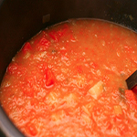
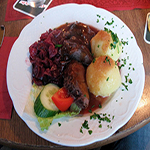
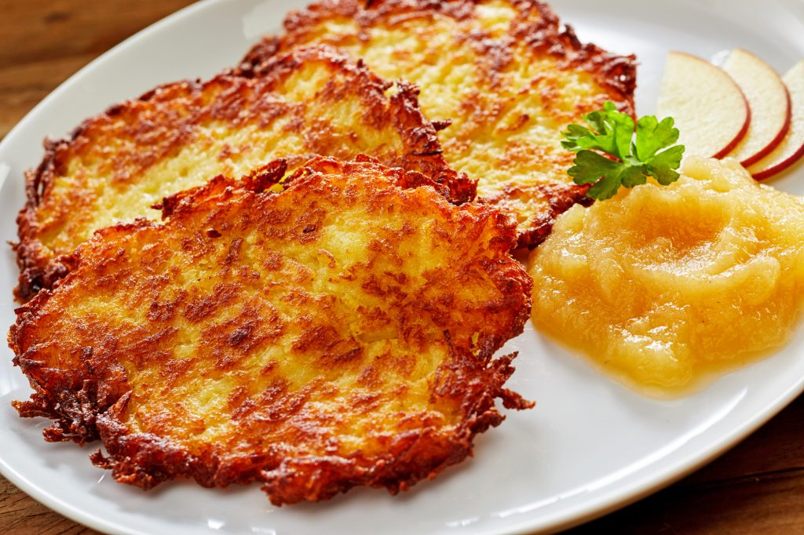

Compre uma comida Árabe e leve o refrigerante de graça.
Comidas alemãs
Eintopf

Uma tigela fumegante de eintopf vai aquecê-lo em um dia frio. O nome desse guisado tradicional alemão significa literalmente “uma panela” e refere-se à maneira de cozinhar em vez de uma receita específica. No entanto, a maioria das receitas contêm os mesmos ingredientes básicos: um caldo, alguns legumes, batatas ou legumes e alguma carne (geralmente de porco, carne de boi ou de frango) ou, às vezes peixe. Há especialidades regionais, por exemplo,lumpen und fleeh (que significa “trapos e pulgas ‘) na área de Kassel, que é semelhante ao cozido irlandês
Sauerbraten

Os alemães adoram sua carne – e Sauerbraten(que significa “azedo” ou “em conserva” assado) é uma carne assada que isso é considerado como um dos pratos nacionais do país. Ela pode ser feita a partir de diferentes tipos de carnes (originalmente cavalo), que são marinados em vinho, vinagre, especiarias, ervas e temperos por até dez dias. Schweinenbraten é um delicioso prato de carne de porco assada, geralmente servido com repolho refogado ou chucrute, dumplings ( knoedel) - e regado com uma cerveja pilsner.
Kartoffelpuffer

Estes são rasas panquecas fritas feitas de batata ralada ou em pó misturado com farinha, ovo, cebola e temperos. Você pode apreciá-los ou salgado como um prato principal de carne ou peixe, ou doce com molho de maçã, mirtilos, açúcar e canela. Se for a Alemanha, procure por eles em mercados ao ar livre no inverno.